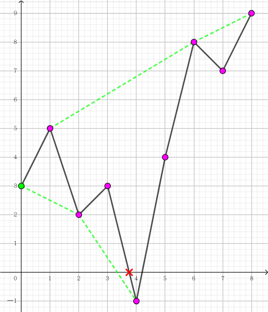
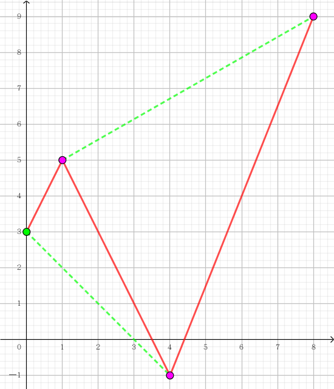

有一棵 $n$ 个顶点的树，每个点 $i$ 有一个权值 $w_i$。你现在在顶点 $1$，你需要到达顶点 $t$。
你可以沿着树的边进行行走，你的初始血量 $H = 0$。对于每个点 $i$，当你第一次到达顶点 $i$ 时，会立即执行 $H \gets H + w_i$。若此时 $H < 0$，(无论这个顶点是否是终点 $t$)，游戏都会失败。如果此时 $H \geq 0$ 且你在顶点 $t$，则算游戏成功。
请判断游戏是否能成功。
第一行包含一个正整数 $T$，表示数据组数。
对于每组数据，第一行包含两个正整数 $n, t$ ($2 \leq t \leq n \leq 2 \times 10^5; \sum n \leq 5 \times 10^5$)，表示顶点的个数和终点的标号。
第二行包含 $n$ 个整数 $w_1, w_2, \cdots, w_n$ ($-10^6 \leq w_i \leq 10^6; w_1 \geq 0$)，表示每个点的权值。
最后 $n - 1$ 行，每行两个正整数 $u, v$ ($1 \leq u, v \leq n; u \neq v$)，描述树上的一条边。保证这 $n - 1$ 条边恰好构成一棵树。
对于每组数据，输出一行，如果游戏可以成功，则输出 escaped，否则输出 trapped。
不妨将树看成以 $1$ 为根的有根树。则显然以 $t$ 为根的子树 (除了 $t$) 是没有用的，可以将其删掉。下面不妨设 $t$ 是叶节点。
先考虑树为一条链 $1 - 2 - \cdots - n$ 的情形。此时的方案其实是唯一的，$H$ 的变化依次为 $w_1, w_1 + w_2, w_1 + w_2 + w_3, \cdots, w_1 + w_2 + \cdots + w_n$。游戏成功当且仅当这里面的所有数都 $\geq 0$。
我们可以从原点出发引折线，这些折线经过 $\left( i, w_1 + w_2 + \cdots + w_i \right)$。这个折线就描述了你在游戏过程中的血量变化。
我们可以将折线上下平移，这样就能表示不同的初始血量在游戏过程中的变化。
如，初始血量为 $3$，$\left\{ w_i \right\} = \left[ 2, -3, 1, -4, 5, 4, -1, 2 \right]$ 时的折线图如下：
注意到，我们关心的只是该折线第一次与 $x$ 轴的交点的坐标 (它表示你最早会在哪个时刻死)，结合平移，我们可以对折线进行简化 —— 即对于每条平行于 $x$ 轴的直线 $y = y_0$，记录它第一次与该直线的交点坐标 (如上图中的绿色包络)。
那么，上图的折线就可以被简化成这样：
具体横坐标的位置不重要，因为我们只需要保持它到达 $y = 0$ 时所经过的 $y$ 值的区间不变就可以了。
形式化地，我们就是取出所有端点的前缀最大值和前缀最小值，交错相连即可。
对于能否到达 $t$ 点的问题，我们可以额外加一条边 $t \to t'$，其中 $w_{t'} = + \infty$，然后判断折线是否能延伸到无穷即可。
于是，每条简化后的折线可以表示成一个数组 $\left[ \left( a_1, a_2 \right), \left( a_3, a_4 \right), \cdots \right]$ ($a_i < a_{i+1}$) 的形式，表示折线的走向是先减 $a_1$，再加 $a_2$，再减 $a_3$，以次类推。
(ps: 为了统一起见，规定 $a_1$ 是向下走。如果第一段是向上，则在前面补充一个 $0$)
现在考虑两条链的策略，对于两条链 $\left[ \left( a_1, a_2 \right), \left( a_3, a_4 \right), \cdots \right]$ 和 $\left[ \left( b_1, b_2 \right), \left( b_3, b_4 \right), \cdots \right]$，则第一步走 $\min \left\{ a_1, b_1 \right\}$ 的较小者是一个不劣的策略。
不妨设 $a_1 < b_1$。则考虑一个策略，如果使用了 $\left( a_1, a_2 \right)$ (即 $- a_1, + a_2$)，那么将其移到第一步使用显然可行。
若没使用 $\left( a_1, a_2 \right)$，那么先使用 $- a_1, + a_2$ 显然也是不劣的策略。
因此我们可以将两条链进行有序表合并 (归并)，最后再将折线进行简化即可。
于是，两条链的策略 (血量折线) 可以等价为一条链。这样不难归纳得出每棵子树都能转化为一条链。
考虑具体实现，每次合并的时间复杂度正比与两个数组的长度之和。而一个数组的长度是 $O \left( size \right)$ 级别的 ($size$ 为该子树大小)，因此最终时间复杂度是 $O \left( n^2 \right)$ 的。
不过，对于这种归并类问题，我们可以考虑启发式合并，将小的数组合并到大的数组中。又简化折线只会删除元素，不会添加元素，故不会对复杂度造成影响。
总时间复杂度 $O \left( n \log^2 n \right)$，可以接受。
#include <bits/stdc++.h>
using std::cin;
using std::cout;
typedef std::pair <int, int> pr;
typedef std::map <int, int> map;
const int N = 200054, M = N * 2, INF = 0x3f3f3f3f;
int n, E, ti;
int a[N];
int to[M], first[N], next[M];
map f[N];
inline int max(const int x, const int y) {return x < y ? y : x;}
inline void addedge(int u, int v) {
to[++E] = v, next[E] = first[u], first[u] = E;
to[++E] = u, next[E] = first[v], first[v] = E;
}
void insert(map &A, const pr &x) {
map::iterator it, jt; bool ret;
std::tie(it, ret) = A.emplace(x);
if (!ret) it->second += x.second - x.first;
for (jt = it; it != A.begin(); )
if ((--jt)->second >= it->first)
jt->second += it->second - it->first, A.erase(it), it = jt;
else break;
for (jt = std::next(it); jt != A.end(); )
if (it->second >= jt->first)
it->second += jt->second - jt->first, jt = A.erase(jt);
else break;
}
void decrease(map &A, int x) {
int s = -x, t; map::iterator it;
for (it = A.begin(); it != A.end(); ++it) {
s += it->second - it->first;
if (s > 0) {
t = it->second, A.erase(A.begin(), ++it),
A.emplace_hint(A.begin(), t - s, t);
return;
}
}
A.clear();
}
inline void merge(map &A, map &B) {
if (A.size() < B.size()) A.swap(B);
for (const pr &e : B) insert(A, e);
}
void dfs(int x, int px = 0) {
int i, y;
f[x].clear();
if (x == ti) {f[x].emplace(max(-a[x], 0), INF); return;}
for (i = first[x]; i; i = next[i])
if ((y = to[i]) != px) dfs(y, x), merge(f[x], f[y]);
if (a[x] > 0) insert(f[x], pr(0, a[x]));
else if (a[x] < 0) decrease(f[x], -a[x]);
}
void work() {
int i, u, v, s = 0;
cin >> n >> ti, E = 0;
memset(first, 0, (n + 1) << 2);
for (i = 1; i <= n; ++i) cin >> a[i];
for (i = 1; i < n; ++i) cin >> u >> v, addedge(u, v);
dfs(1);
for (const pr &e : f[1]) {
if (s < e.first) break;
if (e.second >= INF) {cout << "escaped\n"; return;}
s += e.second - e.first;
}
cout << "trapped\n";
}
int main() {
int T;
std::ios::sync_with_stdio(false), cin.tie(NULL);
for (cin >> T; T; --T) work();
return 0;
}
坑1：具体实现是可以使用 std::map 来存储 (即 $A \left[ a_1 \right] = a_2, A \left[ a_3 \right] = a_4$)，方便修改。当然要注意当 $a$ 相等的时候是无法插入的，需要处理。